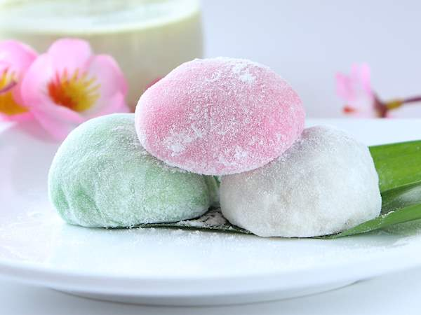

Mochi

Cute traditional Japanese dessert!
Going back into the ancient times, mochi rice cackes are important part of Japanese culture and a staple of it's
cuisine. Chewy cackes can be made with numerous fillings, including ice-cream.
Ingredients
- 3/4 cup sweet rice flour
- 3/4 cup water
- 1/4 cup powdered sugar
- 1/2 cup cornstarch
- Fillings, if you want any
Steps
- Prepare the mochi dough by combining the sweet rice flour, sugar, and water into a bowl. Mix it well!
- Cover your bowl with plastic wrap and microwave for 1 minute.
- Remove the bowl, mix the dough, and microwave for an additional 1 minute. Remove and mix again.
- Sprinkle a flat surface or counter with additional sweet rice flour and pour the dough on top. Then sprinkle
more sweet rice flour on top of the dough.
- Roll out the mochi dough and cut into large circles. Cover and allow to cool.
- Prepare the fillings, if you have any and put them into the center of the dough circles. Grab the sides of
the dough and pinch the dough at the top of the filling until it is completely encased in
dough.
- If you put ice-cream into the mochi, cover and place the mochi back into the freezer until it is time to be eaten.